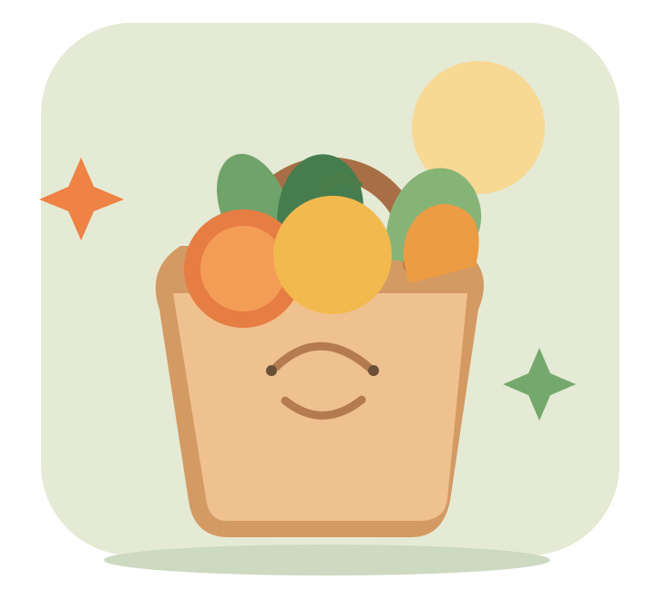
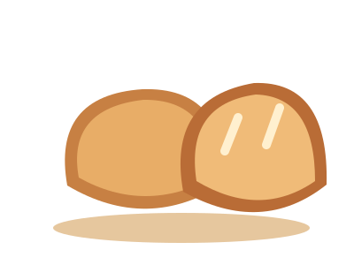
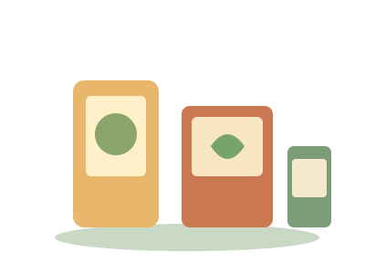

Na sua vizinhança
Uma opção prática para resolver as compras do dia a dia sem complicação.
Do café da manhã ao jantar, encontre os itens essenciais para a sua rotina em um só lugar. Simples, prático e com aquele jeitinho de bairro.
* Texto ilustrativo. Confirme a oferta e os serviços reais antes de publicar.

Exemplos de benefícios para adaptar conforme os serviços realmente oferecidos.
Uma opção prática para resolver as compras do dia a dia sem complicação.
Encontre categorias essenciais reunidas em um só lugar.
Uma experiência de compra com atenção e contato direto.
Conheça algumas categorias que podem fazer parte do catálogo do seu mercado.
Variedade para o seu dia a dia.

Para deixar o café mais gostoso.

Itens para as receitas de todo dia.
Catálogo ilustrativo: produtos, estoque, preços e disponibilidade devem ser confirmados pelo estabelecimento.
Este é um exemplo de jornada de compra para um mercado que atende pelo WhatsApp. Adapte o fluxo conforme a operação real.
Veja as categorias disponíveis no site.
Envie sua lista e consulte estoque, preços e condições.
Confirme com a equipe as opções de compra e retirada, se disponíveis.
Converse com o mercado para consultar os produtos. O contato será habilitado quando um número real for configurado.
Respostas demonstrativas. Atualize antes de colocar o site no ar.
Este modelo não apresenta preços fictícios. É possível cadastrar preços reais após confirmação do estabelecimento.
O site permite abrir uma conversa com mensagem pré-preenchida após configurar um número de WhatsApp válido. O atendimento e a confirmação do pedido dependem do estabelecimento.
Essa informação ainda não foi fornecida. Consulte o estabelecimento e atualize esta resposta conforme a área atendida e as condições reais.
O horário ainda não foi informado. Substitua este texto pelos dias e horários oficiais antes da publicação.